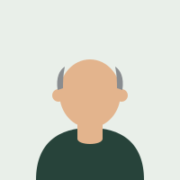

Marcus Ellington
ICF PCC · 18 yrs in strategy
Guides moves likeManagement Consulting → AI Transformation
Book a free intro call →5Careers is where experienced professionals find a coach who specializes in career change for 2026. Browse the roster, see who you click with, and book a free intro call — no forced matching, no pressure.
Free to browse. Free intro call with any coach. You choose — never auto-assigned.
“I'm good at this — but I can't keep doing it, and I can feel my industry shrinking around me.”
“I make good money and I'm miserable. I want out, but starting at the bottom at 47 isn't an option.”
“I don't need another job board. I need someone who truly understands this kind of move.”
Here's the truth most platforms won't tell you: AI isn't the enemy. The slow slide is. It's the comfortable denial that keeps a capable professional in a role being quietly automated — until the day the spreadsheet decides otherwise. Changing course is hard enough alone. The fastest way through is a coach who specializes in exactly this kind of move — and a few people walking it alongside you.
This isn't starting over. It's repositioning what you already built.
Your years of judgment, relationships, and pattern-recognition can't be replicated by a 24-year-old — or by an AI. A generalist tells you to "follow your passion." A coach who specializes in career change shows you how to redeploy what you have, where the 2026 market wants it.
Some have made a big career change themselves; all have guided people through one. Either way, they know the path you're on.
Filter by your field, your target, and your constraints — then pick the coach who fits. No one gets auto-assigned to you.
Coaches who actually know which roles are growing with AI — and exactly how to position experience like yours to land one.
No forced matching. Look through the roster yourself and book a free intro call with anyone who looks right.
Filter by field, specialty, or the move you want to make. You see every coach — not a gated shortlist someone picked for you.
A no-pressure chemistry call with anyone you like. Meet as many coaches as you want before you decide.
Pick the person who feels right, and start when you're ready. The choice is always yours.
Can't decide between a few? — it only ever suggests, you're never locked in.
Browse the full roster and pick who fits — no one is assigned to you. Filter by the field you're moving toward, or the one you're coming from. Every coach is vetted for real expertise in guiding career transitions.
Showing all 8 coaches
ICF PCC · 18 yrs in strategy
Guides moves likeManagement Consulting → AI Transformation
Book a free intro call →ICF PCC · 15 yrs in law
Guides moves likeCorporate Law → AI Governance & Compliance
Book a free intro call →ICF ACC · 12 yrs in media
Guides moves likePrint Media → UX & Conversation Design
Book a free intro call →ICF PCC · 16 yrs in marketing
Guides moves likeMarketing → AI-Powered Marketing
Book a free intro call →ICF ACC · 20 yrs in engineering
Guides moves likeMechanical Engineering → Renewable Energy
Book a free intro call →ICF PCC · 13 yrs in education
Guides moves likeTeaching → Learning Experience Design
Book a free intro call →
ICF MCC · 22 yrs in finance
Guides moves likeRetail Banking → Sustainability / ESG
Book a free intro call →ICF PCC · 14 yrs in operations
Guides moves likeOperations → Data & Analytics
Book a free intro call →No coaches in that category yet — or see all coaches.
Founding roster shown for illustration — names, portraits and details are placeholders while we hand-vet our first coaches. Every listed coach will be verified for real expertise in guiding career transitions before going live.
A great coach gets you moving. A few people making the same change keep you going. Accountability Circles are small groups of members in transition together — so the loneliest part of changing careers stops being lonely.
Small pods of 4–6, matched by where you are — exploring, validating, or actively applying — and varied targets, so no one's competing for your job.
A simple format — wins, blockers, one commitment each — so progress keeps happening between coaching sessions, not just during them.
A trained 5Careers coach facilitates, so it never drifts into a venting session or a networking pitch.
Free while you're working with a coach — or join on its own for a small monthly membership.
Now forming — we're starting the first Circles with our founding members.
Our coaches steer you toward roles that are growing through 2026 and beyond, are AI-resilient or AI-leveraging, and are reachable from where you are now — no four-year restart required.
Hard to automate, and rewards domain experience over coding.
Roles AI can't replace — judgment, care, and people are the work.
Long build-outs and mission-driven work that reward operators.
We do one thing: connect career changers with coaches who specialize in AI-era pivots. That focus is the whole value, so we're upfront about who it serves.
No subscription to browse, and no charge to meet a coach. When you're ready, each coach sets their own transparent pricing — shown upfront, before you book.
Founding roster: we're hand-vetting our first coaches now and onboarding members in small numbers, so every match gets real attention.
If you have a track record of guiding people through career transitions, you may be a fit for the founding roster.
Browse coaches who specialize in your kind of move, book a free intro call, and walk it with a circle of people making the same change.
Free to browse. Free to meet a coach. You always choose.